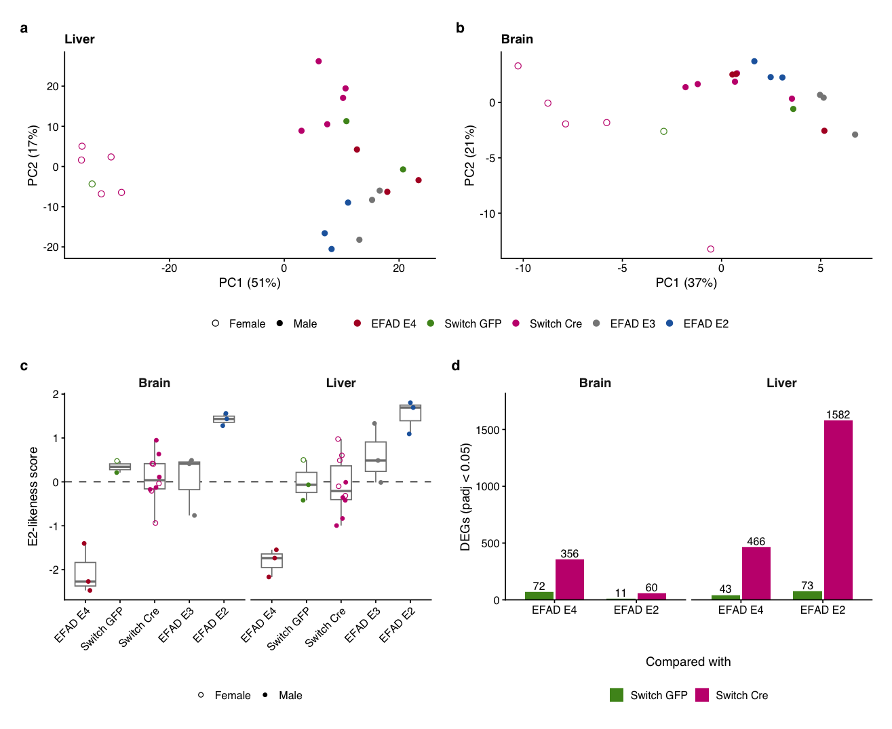
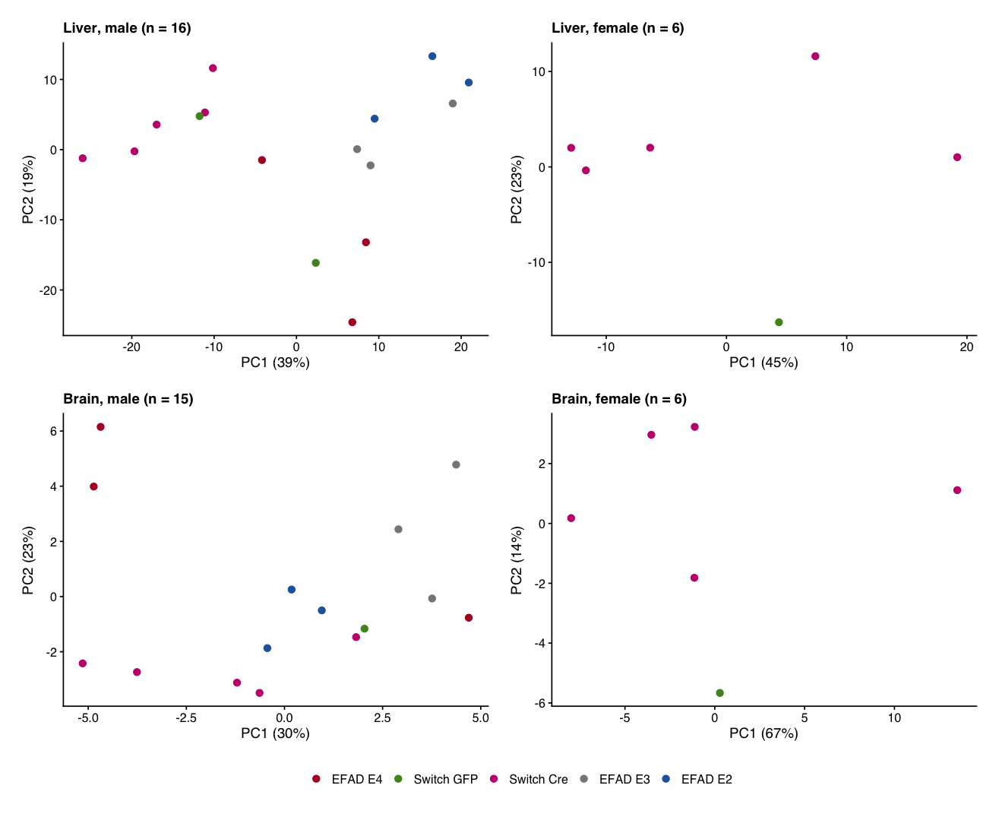

The switch mice are compared with the EFAD mice, which carry human APOE2, APOE3 or APOE4 for life. All of these samples were sequenced in the 2025-10 run, so these comparisons have no run confound. They also use none of the 2025-04 samples.
What they show: whether the switched liver moves toward germline E2, stays like E4, or goes somewhere else. Switch GFP is still E4 in liver, so Switch GFP vs EFAD E4 measures how far apart the two mouse models are before any switch.
WarningLimitations
The EFAD mice are not matched controls for the switch:
Sex: all EFAD mice are male. The switch groups are mixed (liver: 5 F / 5 M Cre, 1 F / 2 M GFP). Set GERM_MALES_ONLY <- TRUE below to restrict the switch groups to males.
Age and exposure: EFAD mice carried E2 / E4 from conception. The switch mice carried E4 until the AAV at 2 months, then E2 in hepatocytes only, for about 10 months. Brain, and any non-hepatocyte cell, stays E4.
Colony and transgene: the EFAD mice are 5xFAD heterozygous, from a separate colony. Switch GFP vs EFAD E4 estimates this whole package of differences.
Group size: n = 3 per EFAD genotype, so germline estimates are noisy and germline p values are weak.
A switch effect that disagrees with germline E2 vs E4 is therefore not evidence against it. An acute, adult-onset, hepatocyte-only switch need not reproduce lifelong whole-body E2.
7.1 Setup
Code
GERM_MALES_ONLY <-FALSE# TRUE: switch groups restricted to males (EFAD mice are all male)# column order runs from E4 to E2: the switch starts as E4 (GFP) and Cre moves hepatocytes to E2GERM_LEVELS <-c("EFAD E4", "Switch GFP", "Switch Cre", "EFAD E3", "EFAD E2")GERM_COLS <-c(`EFAD E4`="#B2182B", `Switch GFP`= GROUP_COLS[["GFP"]],`Switch Cre`= GROUP_COLS[["Cre"]], `EFAD E3`="#878787", `EFAD E2`="#2166AC")germ_meta <-function(tissue) { m <-cur_meta(tissue)if (GERM_MALES_ONLY) m <- m[m$arm !="AAV"| m$sex =="Male", , drop =FALSE] m |>mutate(group =factor(as.character(group), levels = GERM_LEVELS)) |>droplevels()}# variance-stabilised expression of the 2025-10 samples of a tissue (same normalisation as every model)germ_vst <-map(set_names(TISSUES), \(t) { m <-germ_meta(t) dds <-DESeqDataSetFromMatrix(geneCounts[gene_qc[[t]]$keep, rownames(m)], m, ~1) |>norm_dds()list(meta = m, vst =assay(vst(dds, blind =TRUE)),norm =counts(dds, normalized =TRUE))})germ_meta("Liver") |> dplyr::count(group, sex)
7.2 APOE genotype and expression per group
The liver E2 allelic fraction is the fraction of hAPOE reads with the E2 base at rs7412. It shows how far each switched liver has moved toward a germline E2 liver; brain should stay E4 in the switch mice.
Four views of the whole transcriptome, all using 2025-10 samples only:
(a, b) PCA of the 500 most variable genes.
(c) E2-likeness score. Each sample’s position on the germline E2-vs-E4 axis: the mean z of the top-200 germline E2-up genes minus the top-200 E2-down genes. The EFAD E2 / E4 mice define that axis, so their own scores are optimistic. The switch mice are scored out of sample.
(d) Direct comparison. DEGs (padj < 0.05) between each switch group and each germline group, in one model per tissue (~ sex [+ extraction batch] + group).
Code
germ_pca <-function(t) { x <- germ_vst[[t]] v <- x$vst[head(order(apply(x$vst, 1, var), decreasing =TRUE), 500), ] pc <-prcomp(t(v)) ve <-round(100* pc$sdev^2/sum(pc$sdev^2))tibble(PC1 = pc$x[, 1], PC2 = pc$x[, 2], group = x$meta$group, sex = x$meta$sex) |>ggplot(aes(PC1, PC2, colour = group, shape = sex)) +geom_point(size =1.4) +scale_colour_manual(values = GERM_COLS, name =NULL, drop =FALSE) +scale_shape_manual(values =c(Female =1, Male =16), name =NULL) +labs(title = t, x =sprintf("PC1 (%d%%)", ve[1]), y =sprintf("PC2 (%d%%)", ve[2])) +theme_bulk()}e2_df <- scores |>mutate(group =factor(as.character(group), levels = GERM_LEVELS)) |> dplyr::filter(!GERM_MALES_ONLY |!str_starts(group, "Switch") | sex =="Male")p_e2like <-ggplot(e2_df, aes(group, e2_likeness, colour = group)) +geom_hline(yintercept =0, linewidth =0.25, linetype =2) +geom_boxplot(outlier.shape =NA, linewidth =0.3, width =0.6, colour ="grey50") +geom_point(aes(shape = sex), size =1, position =position_jitter(width =0.15, seed =1)) +facet_wrap(~ tissue) +scale_colour_manual(values = GERM_COLS, guide ="none") +scale_shape_manual(values =c(Female =1, Male =16), name =NULL) +labs(x =NULL, y ="E2-likeness score") +theme_bulk() +theme(axis.text.x =element_text(angle =45, hjust =1))p_direct <- direct |>separate(comparison, c("switch", "germline"), sep =" vs ") |>mutate(switch =factor(switch, levels =c("Switch GFP", "Switch Cre")),germline =factor(germline, levels =c("EFAD E4", "EFAD E2"))) |>ggplot(aes(germline, DEGs, fill =switch)) +geom_col(position =position_dodge(0.75), width =0.7) +geom_text(aes(label = DEGs), position =position_dodge(0.75), vjust =-0.3, size =pt(6)) +facet_wrap(~ tissue) +scale_fill_manual(values = GERM_COLS, name =NULL) +scale_y_continuous(expand =expansion(mult =c(0, 0.15))) +labs(x ="Compared with", y ="DEGs (padj < 0.05)") +theme_bulk()p_global <- ((germ_pca("Liver") +germ_pca("Brain")) +plot_layout(guides ="collect")) / (p_e2like + p_direct) +plot_annotation(tag_levels ="a") &theme(legend.position ="bottom", plot.tag =element_text(size =8, face ="bold"))save_plot(p_global, file.path(FIG_DIR, "deseq2", "germline_global_position"), "full", 142)p_global

direct is fitted with every switch mouse (the GERM_MALES_ONLY switch does not refit it).
Sex dominates liver PC1. The female switch livers (Cre and GFP) separate from every male liver, and all EFAD mice are male. Any whole-transcriptome distance between switch and EFAD groups therefore partly reflects sex. The direct model adjusts for sex, but the sex effect is estimated from the switch mice alone. To see the comparison with sex removed, set GERM_MALES_ONLY <- TRUE: 5 Cre and 2 GFP livers remain.
7.3.1 PCA within each sex
The same PCA rerun separately for each sex (500 most variable genes within that sex), so sex no longer drives PC1. Every EFAD mouse is male, so only the male panels compare the switch mice with germline E2 / E3 / E4. The female panels contain switch Cre and switch GFP only.
Code
germ_pca_sex <-function(t, s, n_top =500) { x <- germ_vst[[t]] keep <- x$meta$sex == s vs <- x$vst[, keep, drop =FALSE] v <- vs[head(order(apply(vs, 1, var), decreasing =TRUE), n_top), ] pc <-prcomp(t(v)) ve <-round(100* pc$sdev^2/sum(pc$sdev^2))tibble(PC1 = pc$x[, 1], PC2 = pc$x[, 2], group = x$meta$group[keep]) |>ggplot(aes(PC1, PC2, colour = group)) +geom_point(size =1.4) +scale_colour_manual(values = GERM_COLS, name =NULL, drop =FALSE) +labs(title =sprintf("%s, %s (n = %d)", t, tolower(s), sum(keep)),x =sprintf("PC1 (%d%%)", ve[1]), y =sprintf("PC2 (%d%%)", ve[2])) +theme_bulk()}p_germ_pca_sex <-expand_grid(t =c("Liver", "Brain"), s =c("Male", "Female")) |>pmap(germ_pca_sex) |># female panels hold switch mice only; drop their legend so the male one (all groups) is shown oncemap_if(\(p) str_detect(p$labels$title, "female"), \(p) p +guides(colour ="none")) |>wrap_plots(ncol =2, guides ="collect") &theme(legend.position ="bottom")save_plot(p_germ_pca_sex, file.path(FIG_DIR, "deseq2", "germline_pca_by_sex"), "full", 142)p_germ_pca_sex

7.4 Gene by gene: switch effect vs germline effect
Each gene’s switch effect (Cre vs GFP, 2025-10 only, so the run plays no part) is plotted against its germline effect, E2 vs E4 and E3 vs E4. If the switch reproduced germline E2, the points would lie along the diagonal. Genes in the APOE-liver sets (Chapter 6) are coloured.
Rho is the Spearman correlation of the Wald statistics. log2FC values beyond ±3 are drawn at the edge.
7.5 APOE-liver pathways per sample
Each sample’s score for each APOE-liver set is the mean z of the set’s genes, on variance-stabilised data across the 2025-10 livers. Groups run left to right from E4 to E2.
Code
liver_v <- germ_vst$Liverz <-t(scale(t(liver_v$vst)))path_scores <- apoe_sets |>transmute(set, basis, score =map(genes, \(g) { g <-intersect(g, rownames(z))tibble(sample =colnames(z), group = liver_v$meta$group, sex = liver_v$meta$sex,n_genes =length(g), score =colMeans(z[g, , drop =FALSE])) })) |>unnest(score) |>mutate(set =factor(set, levels = APOE_LIVER_SETS$set))write_csv(path_scores, file.path(CSV_DIR, "deseq2", "germline_apoe_liver_set_scores.csv"))# descriptive contrasts on the scores (Welch t; n = 3 per EFAD group, so germline p values are weak)tt <-function(x, y) if (length(x) >1&&length(y) >1) t.test(x, y)$p.value elseNA_real_path_stats <- path_scores |>group_by(basis, set) |>summarise(cre_minus_gfp =mean(score[group =="Switch Cre"]) -mean(score[group =="Switch GFP"]),p_cre_vs_gfp =tt(score[group =="Switch Cre"], score[group =="Switch GFP"]),e2_minus_e4 =mean(score[group =="EFAD E2"]) -mean(score[group =="EFAD E4"]),p_e2_vs_e4 =tt(score[group =="EFAD E2"], score[group =="EFAD E4"]),gfp_minus_e4 =mean(score[group =="Switch GFP"]) -mean(score[group =="EFAD E4"]),cre_minus_e2 =mean(score[group =="Switch Cre"]) -mean(score[group =="EFAD E2"]),.groups ="drop") |>mutate(switch_same_direction_as_germline =sign(cre_minus_gfp) ==sign(e2_minus_e4))write_csv(path_stats, file.path(CSV_DIR, "deseq2", "germline_apoe_liver_set_stats.csv"))path_stats |>mutate(across(where(is.double), \(x) signif(x, 2)))
The last three sets (OXPHOS, urea cycle, interferon-γ) were chosen from this dataset (Chapter 6).
7.6 APOE-liver candidate genes per group
The genes come from the effect-size candidates in Chapter 6 that are in an APOE-liver set and reach nominal p < 0.05 in the main model or in the 2025-10-only test. Each tile is the group mean z (2025-10 livers), so you can see, gene by gene, whether Cre sits with E4, with E2, or apart from both.